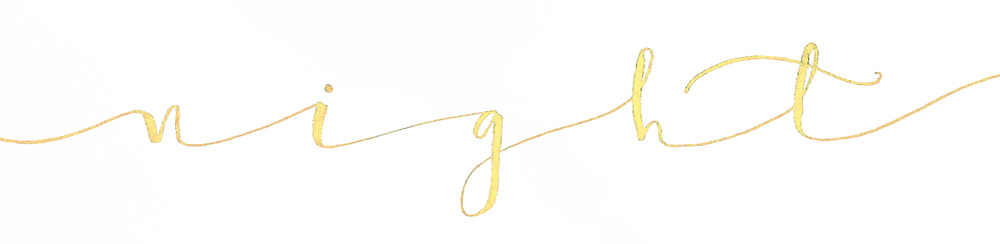

This page describes a Tuesday in "the life of a MICA design student." This particular student tries
to make it look glamorous on her instagram- so this is an opportunity to poke a little fun at myself
for that.
| my cat wakes me up just to take up most of my bed like this. While he may look adorable here, he bit me right after I took this video. | it took me way too many tries to get this video right. Breakfast was cold by the time i got to eat it. | After breakfast I try to fill our my planner
for the rest of the week. I've hand made my planners
for the last few years so I can plan my week, track
my good and bad habits and sometimes plan my day by the hour. I draw out the entire week every Tuesday. It would probably just be easier to buy a planner but I am very picky. My planner is pretty much the only thing that keeps me sane and on track through the school year. |
 |
||
| I have off on Tuesdays so I usually begin my work day by filling out any open Etsy orders I have been putting off for an entire week. | After I finish packaging my orders, I move on to the
homework thats due later in the week. Yes, i definitely
should have done more of it over the weekend.
I have hand letters on Wednesdays so I spend most of my
Tuesdays working on that. This week my Hand Letters assignment was to work on an alphabet with the theme "seasons." I chose to do a summer fruits and veggies alphabet in watercolor. |
I'm very lazy. I hate walking to the post office so I usually procrastinate going until the very last minute. |

| After I finish all the work I planned to do, I make myself dinner for the rest of the week, as a method of procrastination from other work I should be doing. This week I made pasta and meatballs with red sauce. | It takes way too long to make dinner for the week so I usually snack while I cook. By the time I can sit down and eat the food I made, i'm too full from snacks. | I usually end my night by answering emails and watching Law & Order: SVU. I scare myself from that so I have to watch The Office to fall asleep. |